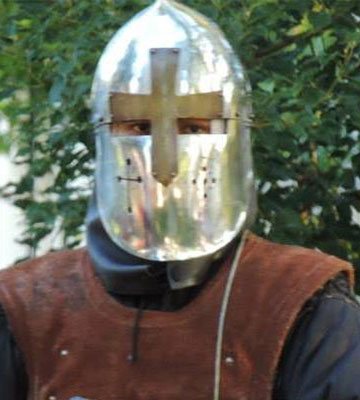
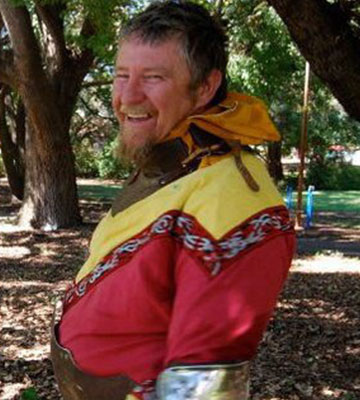
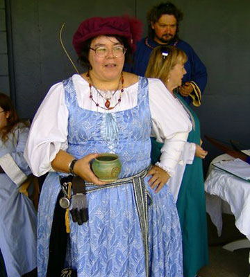
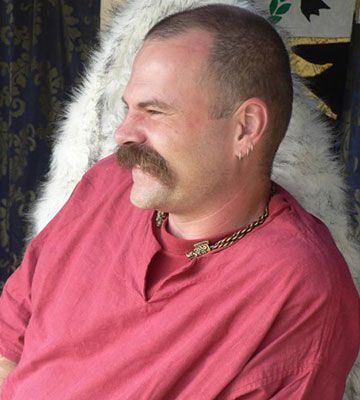

Welcome to the Barony of St Florian de la Riviere of Lochac
of St Florian de la Riviere
We are a branch of the Society for Creative Anachronism (SCA), a worldwide organization of people interested in recreating history up to 1600. The Society for Creative Anachronism (SCA) has groups in Australia, New Zealand, the United States of America, Canada and Europe as well as other countries. The Kingdom of Lochac is made up of Australia and New Zealand. Within Lochac we have groups in every capital and in other major cities. Brisbane is very fortunate to have three major SCA groups within it:
- The Barony of Saint Florian de la Riviere which is based in Brisbane City south of the River and Redlands Shire.
- The Shire of Willoughbyvale is based in Ipswich City
- The Barony of River Haven which encompasses the rest of Queensland.
The SCA attempts to recreate history in a way that makes it fun. We ignore the poverty, the plagues and famines, and instead concentrate on fighting, feasting, researching, and making medieval artifacts. There is something for everyone within the society, while some gravitate towards combat (fully armoured, fencing and archery) there are also the chance to learn some ancient skills (costuming, cooking, armouring, calligraphy and much more) and we welcome new members of all ages. We cover recreation of many different time periods (pre 1600), so whether you want to be a rough and ready viking or a grand refined Elizabethian there are people that can help you achieve that goal.
St Florian de la Riviere is a very active group, we have general fighting practice every monday night and an arts and science day twice a month. You are not expected or required to attend these weekly meeting or special events. You can pick and choose what you want to go to. The level of involvement within the group varies with every individual member. These are just the general meetings and we have many special events outside of these times including feasts, courts, tournaments and large scale camping events (see our events page for more information).
Current Champions
Heavy
Champion

Fencing
Champion

Arts & Science
Champion

Baroness's
Champion

Archery
Champion
Newcomers
Many newcomers feel intimidated by attending their first meeting or feast. However there is no reason to feel uncomfortable, as a newcomer such as you is the lifeblood of the SCA. The more people who are members of the SCA, the more fun we all can have. You will find that we are very happy to help any newcomer with any questions. However, it may help if we explain some of the traditions and behaviours expected of everyone within the group at feasts and other events.
If you are interested in seeing what we are about, please email our hospitaller (hospitaller@stflorian.com.au) or you can either turn up to fighter practice (104 Frederick Street, Annerly at the Annerly bridge club) or an arts and science day (see the events for more details, the venue and time changes from week to week)
Fighting with St Florian de la Riviere
Within the Society for Creative Anachronism, we have three different forms of fighting:
- Armoured combat where opponents throw blows at each other (we refer to this as Heavy Combat)
- Armoured combat where opponents shoot arrows or throw axes at each other (we refer to this as Light Combat)
- Fencing
Each of these have a specific set of rules which ensure that personal safety is considered at all times.
Fighting within the SCA is a full contact sport, and we have special rules governing our weapons, armour and rules of engagement. The most obvious difference between the SCA and other medieval groups is that we do not play with real metal swords. Instead, we use swords made of wood, called rattan. These differences are also noticeable in Light Combat where the arrows we fire at each other have a rubber stopper (we call it a blunt) at the end rather than a metal arrowhead.
Fighting normally occurs under two sets on rules: tournaments and wars.
A tournament is fought upon the list field, where combatants will face each other until there is a victor. This is done with pageantry, chivalry and skill. Tournaments are run fairly often and are fun to watch and to participate in.
Wars occur every couple of months on average across Australia and New Zealand. Wars are big events with people coming from interstate and overseas to take part. It is common in Australia for wars to have 200 people aside. There are wars in the United States that have over two thousand people on each side.
If you would like to know more about fighting, go to the Marshal's Website
Arts and Sciences in St Florian de la Riviere
While our displays of fighting in its three different forms attract much attention, the Society for Creative Anachronism also boasts a strong and vibrant Arts and Sciences base. Within the Barony of St Florian de la Riviere we have large numbers of skilled artisans in a number of interesting and varied fields. Amongst the skills that our members display are:
- Armouring
- Brewing
- Calligraphy & Illumination
- Costuming
- Culinary Arts
- Leatherworking
- Metalworking
- Performing Arts
- Woodworking
While this is only a small list in comparison many of the fields that are available for research within our time period, you will find in St Florian that we have a large number of members who are multi- talented. We encourage newcomers to the group to talk to us about what interests them, and you will find that we are very happy to pass on what knowledge we have. This can either be by chatting to you, suggesting books to read on the topic, or more often, sitting down and showing you an example of the item and helping you to make it.
So are you interested in becoming a member? Click here to register